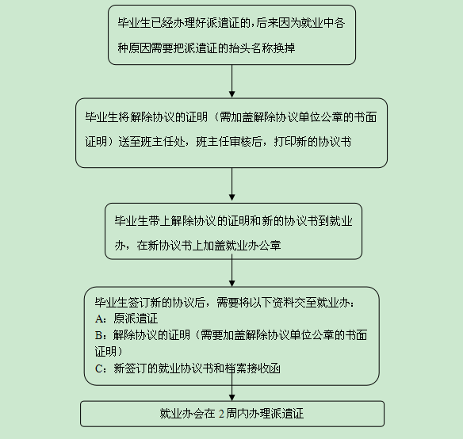

| 创建时间： | 2017/6/26 1:34 |
| 更新时间： | 2017/6/26 1:35 |
| 来源： | http://njnuzb.91job.gov.cn/news/view/aid/99809/tag/bslc |
1．已办理《报到证》，又需改变就业去向的，在规定期限内可申请办理改派手续。办理改派时需提供原《报到证》、原单位同意改派的函件及新接收单位函件（改派回原籍的，可免此件）。
2．毕业离校超过两年的，原则上不再办理改派手续。
3．毕业生到用人单位报到工作已办理转正定级手续的，不再办理改派手续。
4．办理改派需要提供材料
A：原报到证；
B：解除协议的证明（需要加盖解除协议单位公章的书面证明）；
C：新签订的就业协议或者劳动合同复印件和档案接收函；
D：经费：50元。
5．改派需要的时间
就业办收到完成材料后两周办好。
6．改派后档案去向
改签后，毕业生需要转移档案的请自行带上新的派遣证去原派遣证上指定的档案接受单位办理。
7．改派流程

8.补办流程
（1）毕业生毕业离校两年内、《报到证》遗失的，由其本人在江苏毕业生网或市级以上公开发行的报刊上发布遗失声明后，可以重新补办《报到证》。
（2）毕业生毕业离校超过两年、《报到证》遗失的，不再补办，但可至学院就业办办理《报到证》证明书，然后指江苏省招生就业考试中心盖章确认。